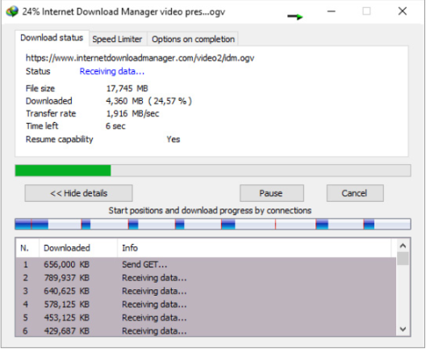

Powerful download engine
Our powerful download engine uses unique algorithms to receive Internet data in a fastest possible way. IDM will accelerate downloads all times because of its innovative dynamic file segmentation technology. Unlike other download managers and accelerators, IDM segments downloaded files dynamically during download process, and it reuses available connections without additional connect and login stages to achieve the best possible acceleration performance. Our engineers have a lot of experience in download acceleration, and we constantly improve this download engine since 1999.. |
 |